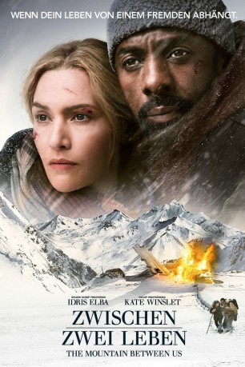

gesehen am 03.02.2018
gesehen am 03.02.2018Alternativ: The Mountain Between Us gesehen am 03.02.2018
 
 IMDB-Wertung: 6.4 / 10
IMDB-Wertung: 6.4 / 10  Metascore:
Metascore: 
Die Fotojournalistin Alex (Kate Winslet) und der Neurochirurg Ben (Idris Elba) kennen sich nicht, doch sie haben das gleiche Problem: Beide sitzen an demselben Flughafen fest, weil ihre Linienflüge wegen des schlechten Wetters gestrichen wurden, müssen aufgrund dringender Termine jedoch schnellstmöglich aufbrechen. Und so landen die beiden Fremden schließlich gemeinsam in einem kleinen Charterflugzeug – ihre einzige Möglichkeit, den Flughafen doch noch zu verlassen. Doch unterwegs erleidet ihr Pilot (Beau Bridges) einen Herzschlag und die drei stürzen in einem abgelegenen Bergmassiv ab. Nur die beiden Passagiere überleben den Absturz und merken schnell, dass das Warten auf Hilfe vergeblich ist – zu weit entfernt von jeglicher Zivilisation sind sie gestrandet. Also machen sie sich notgedrungen selbst auf den hunderte Kilometer langen Weg durch die verschneite Landschaft. Der Beginn eines intensiven Überlebenskampfes...
Jahr: 2017
Dauer: 111 Minuten
FSK: 12
Land: USA Studio: Twentieth Century FoxTonspuren: DTS - ,
Untertitel: Deutsch,
Auflösung: 1080p (1920x808) Größe: 8755 MB
Genre: Action, Thriller, Drama, Abenteuer, Liebe
Regisseur: Hany Abu-Assad
Drehbuch: J. Mills Goodloe
Soundtrack: Ramin Djawadi
Darsteller:
 Idris Elba als Ben Bass
Idris Elba als Ben Bass Kate Winslet als Alex Martin
Kate Winslet als Alex Martin Beau Bridges als Walter
Beau Bridges als Walter Dermot Mulroney als Mark
Dermot Mulroney als Mark Vincent Gale als Airline Customer Service
Vincent Gale als Airline Customer Service Marci T. House als Airline Rep
Marci T. House als Airline Rep Bethany Brown als New York Waiter
Bethany Brown als New York Waiter Lucia Walters als London Doctor (uncredited)
Lucia Walters als London Doctor (uncredited)Datei: X:\2017(N-Z)\Zwischen zwei Leben (2017, FSK12, 1920x808).mkv seit 21.01.2018
Festplatte: HD 2017(A-Z)-2018(A-F)
 Es gibt insgesamt 170 Filme in der Gruppe '2017(N-Z)'
Es gibt insgesamt 170 Filme in der Gruppe '2017(N-Z)'